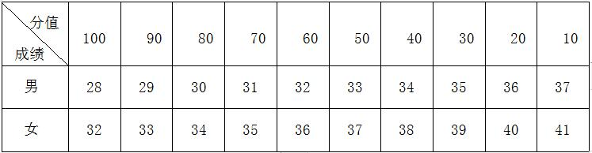

课程管理
|
课程名称 |
公共体育--篮球（II） |
课程代码 |
TX031089 |
|
课程类型 |
√通识课 □学科（专业）基础课 □专业发展课 |
课程性质 |
√必修课 □选修课 |
|
开课单位 |
体育学院 |
适用专业 |
非体育专业 |
|
总学时数 |
36 |
周学时数 |
2 |
|
课程学分 |
1 |
编 写 人 |
郭彩琴 |
|
编写时间 |
2017.07.20 |
审 批 人 |
刘其龙 |
一、教学目的
通过一个学期的篮球课教学，使学生在原有的技术基础和战术基础配合的基础上进一步对技术和战术基础的巩固， 并在此基础上进一步学习整体防守和进攻战术配合并能掌握运用,进一步掌握篮球竞赛规则和裁判法，并达到如下目标： 1.掌握篮球运动的基本技术与基本战术，了解篮球运动的特点，基本了解篮球规则。 2.培养学生参与篮球运动的热情，提高参加篮球活动的能力，使学生在运动的乐趣中体验技能的进步和成功的喜悦。 3.发展学生专项素质及培养学生积极进取、克服困难和团结友爱的集体主义精神。
二、重点与难点
重点：基本技术与基本战术的实践教学，体育项目与身体健康、体育项目与心理健康、竞赛规则及裁判法。
难点：基本技术与战术基础配合的实践教学，竞赛规则及裁判法。
三、基本内容与要求
第1章 理论部分
1.1基本理论：体育与健康、体育项目与身体健康、体育项目与心理健康。
1.2专项理论：现代篮球运动概论、篮球竞赛规则及裁判法。
（一）教学目的：促进学生对身体健康要求的了解，发展学生身体素质；使学生了解篮球基本技术、基本战术、运动的特点及竞赛规则。
（二）重点与难点：体育项目与身体健康、现代篮球运动概论、竞赛规则及裁判法。
（三）基本内容：体育项目与身体健康、体育项目与心理健康；现代篮球运动概论、竞赛规则及裁判法。
第2章 实践部分
2.1基本技术：移动技术、运球技术、传接球技术、投篮技术、突破技术。
2.2 防守技术：防守有球队员、防守无球队员。
2.3 防守战术基础配合：围守中锋；快攻结束部分的2防3配合。
2.4进攻战术基础配合：策应配合；掩护配合。
2.5整体进攻与防守战术配合：
2.5.1快攻与防守快攻；
2.5.2防守半场人盯人与进攻半场人盯人防守
2.5.3区域联防与进攻区域联防；
2.5.4介绍全场紧逼与介绍进攻全场紧逼。
2.6实践部分:教学比赛与裁判实践。
2.7身体素质及专项体能练习：收复跳(10-15次一组)、滑步、交叉跨步摸5米距离线(往返10次一组), 见线折返(运球)跑等(男32秒内,女36秒内)。
（一）教学目的：加深学生对身体健康要求的了解，发展学生身体素质； 加强篮球技术构成、战术原理的认识，进一步了解篮球竞赛规则及裁判法。
（二）重点与难点：体育项目与身体、心理健康，篮球战术原理，竞赛规则及裁判法。
（三）基本内容：篮球基本技术，篮球防守技术，篮球战术基础配合，整体篮球进攻与放手战术配合，临场裁判实践，篮球专项身体素质训练。
第3章 身体素质——中长跑
3.1 起跑和起跑后的加速
3.2 途中跑、终点跑
3.3 中长跑的呼吸
3.4 全程跑：1000米（男生）、800米（女生）
（一）教学目的：通过教学使学生掌握起跑和起跑后的加速、途中跑、终点跑等中长跑的基本技术，学会正确的呼吸方式，发展耐力素质，进一步增强心肺功能。
（二）重点与难点：途中跑技术；中长跑的呼吸。
（三）基本内容：起跑和起跑后的加速、途中跑、终点跑等基本技术；全程跑。
四、授课内容学时分配
|
章目 |
内 容 |
学时 |
|
一 |
理论 |
4 |
|
二 |
篮球技术 |
12 |
|
1 |
基本技术 |
4 |
|
2 |
防守有球、无球队员技术 |
2 |
|
3 |
战术基础配合 |
6 |
|
三 |
篮球战术配合、身体素质训练 |
16 |
|
4 |
快攻与防守快攻 |
2 |
|
5 |
防守半场人盯人与进攻半场人盯人防守 |
4 |
|
6 |
区域联防与进攻区域联防 |
4 |
|
7 |
教学比赛与裁判法 |
4 |
|
8 |
身体素质训练 |
2 |
|
四 |
技术考试 |
4 |
|
合计 |
36 |
|
|---|---|---|
五、成绩考核：
综合成绩＝平时成绩×30%＋考试成绩×70%，考试成绩＝专项成绩×70%＋身体素质成绩×30%。 每一部分都有定量或定性的评分标准，其中身体素质为每学期的必考项目，身体素质考试内容为男子1000米、女子800米。 根据评分标准计算学期体育课程成绩，成绩按五级制，分为优秀、良好、中等、及格、不及格， 90分以上为优秀，80分-89分为良好，70分-79分为中等，60分-69分为及格，60分以下为不及格。
六、考试方法及评分标准
1.平时成绩：包含课堂表现与课堂考勤两部分。（按100 分制计算，占总成绩的30%）
（1）课堂表现情况占平时分50%。课堂学习态度是否积极、认真、端正，对体育理论知识掌握运用熟练度；技术、技能表现进步幅度。
（2）出勤情况占平时分50%。每缺勤一次扣 5 分，每迟到一次扣2分（不足部分从考核项目得分中扣除），学期缺勤 5 次及以上者不能参加考试。
2.考核项目共三项：（按100 分制计算，占总成绩的70%）
（1）2×28米往返运球投篮，占技能总成绩的35%：
考试方法：学生在端线持球站立，起动即开表，运球到对面球篮行进间上篮，如球不进，须补篮到球进篮方能运球返回上篮。 往返2次即须4个球篮必须把求投中，最后一个篮投中后停表。评分标准（表1）(在满分的基础上，多0.1秒少一分)
（2）教学比赛。（技评，占技能总成绩的35%）
方法：考试办法为全场5打5，人员可自由组合，每人只有一次机会。
评分要求： 评分标准：满分为100分。
a．技战术全面熟练，运用合理、熟练，个人防守、进攻综合能力强，攻守转换意识强，特长突出,攻防配合能力强。（90 — 100分）。
b．技战术方法掌握，运用较合理，个人防守、进攻综合能力掌握，攻守转换意识强，但能力一般，技战术普通,攻防配合能力一般。 （89 — 80分）。
c．技战术方法基本掌握，运用较合理，个人防守、进攻综合能力基本掌握，攻守转换意识能力一般，技战术普通,攻防配合能力一般。（79 — 60分）
d．技战术方法基本掌握，运用一般，个人防守、进攻综合能力一般，攻守转换意识一般，技战术运用单一,攻防配合有意识，但不到位。（59 — 40分）
|
技评 |
A |
B |
C |
D |
E |
|
分数 |
100--90 |
89--80 |
79--60 |
59--40 |
39--1 |
（3）体能测试：占技能总成绩30%。
七、教材与参考书目
[1]王家宏,球类运动－篮球，高等教育出版社，2009年6月
[2]中国篮球协会，篮球竞赛规则, 北京体育大学出版社，2012年9月
[3]中国篮球协会，篮球裁判员手册, 北京体育大学出版社，2013年3月
表1 身体素质考核评分标准

注：数据来源于国家学生体质健康标准（2014年修订）。